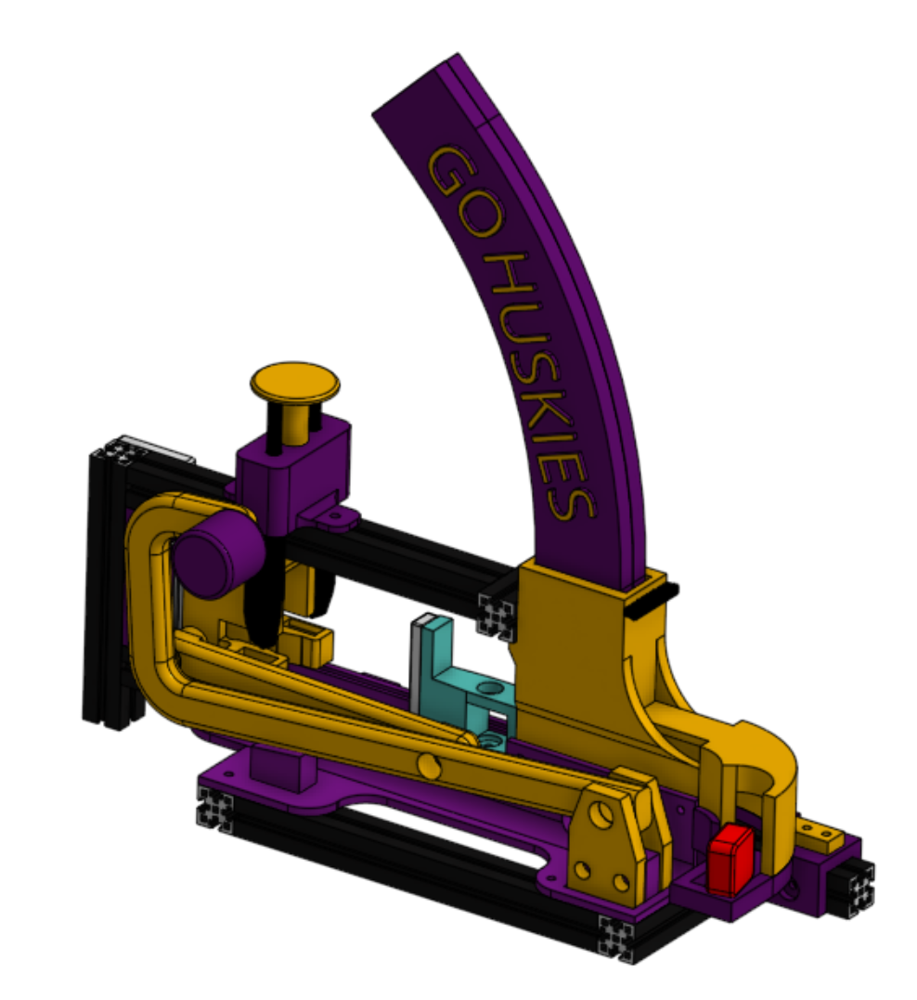

Project Overview & Client Need
This project was developed for Eli Patten, the UW Engineering Outreach Manager, to enhance student engagement during outreach events. The objective was to create a portable, visually engaging candy dispenser that demonstrates core mechanical engineering principles in an intuitive and memorable way.
By combining playful interaction with a visible mechanical energy transfer mechanism, the Candy Bowl aims to spark curiosity and positive association with UW Engineering among high-school students.
Problem Context
- Outreach activities require portable, robust, and intuitive devices
- Systems must survive frequent handling and transport
- Engagement depends on both reliability and visual intrigue
- Engineering concepts should be observable without explanation
Client Requirements & Engineering Specs
- Fits within 15 × 11 × 11 in and weighs under 20 lb
- Survives a 3 ft drop onto a hard surface
- Dispenses one candy within 2 seconds of activation
- Achieves >90% dispense success rate
- Easy to reload and intuitive for first-time users
- UW-themed aesthetics and high engagement factor
- Uses a common mechanical principle in an uncommon way
Design Concept & System Architecture
The Candy Bowl uses the repelling force between two opposing magnets to store and release mechanical energy. When the user presses a button, a latch mechanism releases the carriage, converting magnetic potential energy into a short, controlled impulse that launches a single Starburst candy.
- Purely mechanical launcher — no motors or electronics
- Spring-loaded push button with compliant latch system
- Single-track "banana" style magazine to prevent jamming
- Modular construction using 3D-printed parts and aluminum rails
Design Iteration & Testing
Multiple prototype iterations were developed to address reliability and usability challenges. Early designs experienced candy jamming due to pressure from stacked candies. This was resolved by transitioning from a multi-slot magazine to a single-track geometry.
- Over seven latch and trigger iterations tested
- Jamming mitigated through geometry and tolerance refinement
- Drop testing and repeated actuation validated robustness
Final Assembly

Demonstration
The following video shows a typical user interaction, including button actuation and candy launch behavior during outreach use.
Results, Limitations & Value Delivered
- Meets approximately 88% of key design criteria
- Successfully demonstrates magnets, linkages, and latch mechanisms
- Provides an engaging, hands-on engineering experience
- Remaining limitations include launch force consistency and intuitive operation
Overall, the Candy Bowl delivers strong educational value by combining playful interaction with visible mechanical principles. The design establishes a solid foundation for future refinement while already serving its outreach purpose effectively.